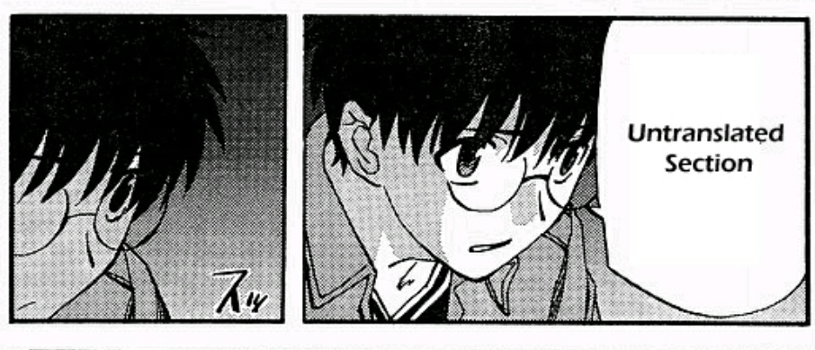

Translation Guidelines
Stub
This page is a stub. You can help by expanding it.
How can I help?
You can help by writing guidelines for translation. This should cover things such as:
- Character voice
- Romanisations styles
- How to work with an editor
- Finding and using closed captions
- Song/poetry/etc. translation
- Onomatopoeia
You can also help by providing concise examples of working from a pad vs. a pre-timed script.
The core of any project, fansub or otherwise, is its translation. Without a translation, there's nothing to edit, nothing to typeset, and nothing to style. However, translation is a very complex topic, rife with many different schools of thought and philosophies, and many different approaches to tackling it.
This document will cover some of the basics of writing translations for anime and the required skills, how to get started as an aspiring translator, how to prepare your scripts, how to communicate with your editor, and other more technical aspects.
Different Approaches
There are many different approaches to translation, and no single "right" way to do it. This document will be biased towards the "interpretive" philosophy, as that is what Kaleido primarily follows. However, this does not mean that other approaches are wrong or ineffective. Different groups have different preferences, and each translator should find out what works best for them.
Basic required skills

Being proficient in both source and target languages is just the foundation of translation work. A good translator needs to master many additional skills that apply across all translation philosophies. Below are some of the key skills that every competent translator is expected to have.
Strong Writing Ability
Language proficiency alone doesn't guarantee good writing skills. While editors are there to polish the final script, translators must provide a solid foundation: accurate translations that read naturally in the target language.
Since editors often don't understand the source language, they rely heavily on the translator's ability to capture both the original's meaning and general writing style. Clear, well-written translations makes the editor's job easier, and often leads to a better final script.
Writing Conventions
Perhaps the most crucial skill is a deep understanding of writing fundamentals and conventions, as well as how they are applied in the source language. This means mastering dialogue construction, maintaining consistent style, understanding tropes and clichés2, and paying careful attention to detail. A translator needs to grasp how dialogue flows naturally, how character voices remain distinct, and how narrative structures work together.
Beyond that, an important skill is also to understand how well the author understands these principles. Literary works will often be written concisely, maintain a clear structure, and follow a style guide. Many light or web novels, on the other hand, will not strictly adhere to these principles, as many authors have not been trained in writing fundamentals.
While editors typically have a stronger command over writing fundamentals and can adapt content to target language conventions, translators are uniquely positioned to interpret the source material's nuances and convey them accurately in the target language.
Writing Conventions
For more information on important writing skills, see the Editing guide which goes into more detail.
Broad knowledge base
A translator must have a deep understanding of both the source and target cultures. Every piece of media reflects the cultural context of its creation, from social norms and historical events to colloquialisms and pop culture references. Having a good grasp of these elements helps translators accurately interpret the author's intent and find appropriate equivalents in the target language.
Beyond cultural knowledge, translators need expertise in various fields depending on the content they're translating. To name some examples:
- School-based settings will often require knowledge of common social norms in the source culture and how they can be mapped to the target culture
- Supernatural shows often draw from mythology, folklore, and religion, as well as how these are commonly interpreted and portrayed in the source culture
- Mecha series might require understanding of military terminology and combat tactics, as well as mecha anime history to understand references to older well-known mecha shows
- Sports series demands knowledge of the specific sport's rules and jargon, and how they differ between the source language and the target language
The broader your knowledge base, the better equipped you'll be to handle any subject matter that may come up.
Research skills
Even the most experienced translators regularly encounter unfamiliar concepts that require extensive googling. Strong research abilities are crucial for understanding specialised terminology, verifying cultural references, and finding authoritative sources. This might mean digging through research papers, asking experts online for help, or spending hours tracking down the origin of an obscure reference.
Creative problem-solving
Translation often presents challenges that can't be solved with dictionaries alone. When direct translations fall flat or cultural concepts don't align, translators must think creatively to preserve the original meaning and impact.
This might mean:
- Reimagining metaphors or idioms that don't translate directly
- Adapting pop culture references to ones the target audience will understand and have the same impact
- Handling speech patterns and dialects thoughtfully by finding equivalents that feel natural without falling into stereotypes
- Working with wordplay and puns by creating new ones that work in the target language while maintaining the spirit of the original
- Balancing character voices to maintain their distinct personalities across language barriers
Experience helps develop this skill, as you build a mental library of successful solutions to common translation challenges.
Dedication and patience
Fan translation is a labour of love that demands significant time and effort without monetary compensation. The work can be challenging and frustrating, requiring extensive research and careful attention to detail. You'll face complex problems that need time to solve properly, and you'll need to maintain motivation through long projects.
Many translators find satisfaction in creating high-quality work that helps others enjoy content they couldn't otherwise access. Without this deep-seated dedication, projects often remain unfinished or fall short of their potential.
Philosophies and approaches
Translation approaches exist along a spectrum between two main philosophies: "domestication" and "foreignisation". Domestication adapts content to feel natural in the target culture and language, while foreignisation tries to preserve as many elements of the source culture and language as possible.
In practice, most translations strike a balance between these philosophies based on context and specific translation challenges. While heavy domestication might involve changing character or place names to local equivalents, even highly interpretive translations rarely make such dramatic adaptations.
Conservative translation
This foreignisation-based approach prioritises fidelity to the source text's literal meaning, staying as close as resonably possible to the original phrasing and structure. Many new translators gravitate toward this style, as do viewers who prioritise "accuracy" above other considerations.
While this approach reliably conveys basic meaning, it often struggles with the author's voice and style. Cultural context and implications get lost, and wordplay or humour rarely survives the journey between languages. Perhaps most importantly, the resulting text often comes across as unnatural or stilted in the target language.
Conservative translation often keeps terms untranslated and relies heavily on translation notes. These techniques, while seemingly "safe", can actually diminish the viewer's experience. Untranslated terms create barriers to understanding and translation notes interrupt reading flow and almost always give readers a false sense of deeper understanding.
Interpretive translation
This domestication-based approach aims to recreate the source text's intended effect and emotional resonance in the target language. Rather than translate literally, interpretive translators work to evoke the same feelings and reactions in their audience as the original did.
Experienced translators often prefer this method as it lets them faithfully capture the author's unique voice, style, and creative vision. Through adaptation, they preserve the essence of wordplay and humour by crafting culturally-relevant equivalents that authentically connect with the target audience.
Despite its advantages, interpretive translation has notable drawbacks. It's easier to accidentally stray from the original's core message or miss important story elements when taking creative liberties. It also requires significantly more time and expertise than conservative translation, making it challenging for new translators to master.
Striking the right balance
The challenge lies in striking the right balance. Too conservative, and the translation feels stiff; too interpretive, and it risks straying from the source material's intent. Successful translations attempt to blend both methods, remaining faithful to the source material's core message while adapting the delivery to feel natural and engaging for the target audience.
Most modern fansub groups, including Kaleido, favour an interpretive approach that prioritises natural, idiomatic expression in the target language. Common terms like "otaku" and honorifics may still be retained when their usage adds meaningful context or flavour, but the focus remains on conveying the intent behind each line rather than translating word-for-word. After all, an untranslated term may not fail at conveying the intended meaning, but it will fail at conveying any meaning.
On translation notes
Translation notes are a last resort, full stop. They are only to be used when there is no alternative to conveying the intended meaning through any other means. Your job as a translator is not to educate viewers about Japanese language or culture, but to accurately express the content. Consider carefully whether each note is truly necessary to comprehend the show. A high number of translation notes (or depending on who you ask, any amount of translation notes) indicates that the translator did not do a good enough job of conveying the meaning through translation.
If you want to include extra cultural information that isn't essential to understanding the plot, add it to your release description or a wiki page instead, not as big blocks of text on the screen during the show. An exception to this rule may be an alternative, fully opt-in track meant for viewers who have already watched the show and want to know more about the finer details, such as the reasoning behind translation choices, or explanations behind references.
Preparing a script
Modern translators typically work in one of two ways:
- Working from a pad
- Working from a pre-timed script
We recommend working from a pre-timed script, as it allows you to more easily account for line length, and allows you to easily play back specific lines.
Most translators will work with both. Dialogue is typically written in a pre-timed script, but signage may be written on a pad instead.
Working from a pad
...
Working from a pre-timed script
...
-
Many parts of this document concerning basic translation skills are based on 8th Sin's Fan Translation Guide. ↩
-
A great resource for learning about many tropes in writing is the TropeTalks series by Overly Sarcastic Productions. ↩